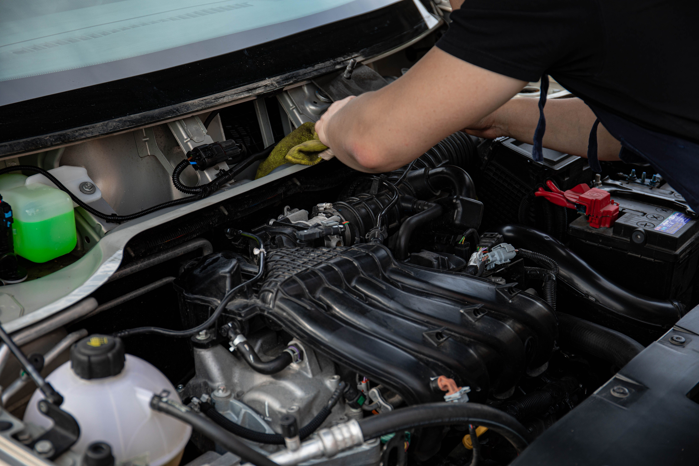

How to Check Engine Coolant Level Safely
To check engine coolant, park the vehicle on a level surface, turn the engine off, and allow it to cool completely. Locate the coolant overflow reservoir and check whether the coolant level is between the MIN and MAX markings. Never remove a radiator or coolant reservoir cap while the engine is hot because the cooling system can be under pressure.

Why Checking Engine Coolant Matters
Engine coolant, also called antifreeze, helps control engine temperature and protects the cooling system from freezing and corrosion. A low coolant level can reduce the system's ability to transfer heat away from the engine.
Checking the coolant level is one of the simpler visual checks you can perform on many vehicles. You usually do not need to open the cooling system at all because the level can often be checked through the translucent coolant reservoir.
The exact reservoir location and coolant specifications vary by vehicle, so the owner's manual should be used whenever you are unsure which component to inspect.
Coolant Safety Before You Start
The cooling system can become extremely hot while the engine is running. Coolant may also remain under pressure after the engine is switched off.
- Park the vehicle on a level surface.
- Turn the engine off before checking the coolant.
- Allow the engine to cool completely before opening any coolant cap.
- Never remove a radiator cap from a hot engine.
- Keep your hands and clothing away from belts, fans, and other moving components.
- Keep coolant away from children and animals because antifreeze can be toxic.
- Clean up coolant spills promptly and dispose of used coolant according to local requirements.
Never open a radiator or pressurized coolant reservoir cap while the engine is hot. Hot coolant and steam can escape under pressure and cause severe burns.
What You Need
For a basic coolant level check, you normally do not need special tools. Having the following items nearby can be useful:
- Your vehicle owner's manual
- A flashlight if the engine bay is difficult to see
- Clean gloves if desired
- The correct coolant specified for your vehicle if the level is low
How to Check Engine Coolant Step-by-Step
1. Park on a Level Surface
Park the vehicle on a relatively level surface and switch the engine off. Engage the parking brake and allow the engine to cool before inspecting the cooling system.
A level surface makes it easier to get an accurate reading from the coolant reservoir markings.
2. Let the Engine Cool Down
Wait until the engine and cooling system have cooled before opening or touching any coolant cap.
If the vehicle was recently driven or the temperature gauge indicated overheating, give the engine additional time to cool. Do not try to speed up the process by opening a hot pressurized cooling system.
3. Locate the Coolant Reservoir
Open the hood and look for the coolant expansion or overflow reservoir. On many vehicles it is a translucent plastic tank with MIN and MAX or LOW and FULL markings.
The exact location varies by vehicle. If you cannot identify the correct reservoir, check the owner's manual instead of guessing.
4. Check the Coolant Level
Look at the side of the reservoir and compare the coolant level with the markings. When the engine is cold, the level should generally be within the manufacturer's indicated cold-fill range.
You normally do not need to remove the reservoir cap just to inspect the level. The translucent plastic allows you to see the coolant inside.
5. Inspect the Coolant Condition
If the reservoir is accessible and the coolant can be seen clearly, look for obvious signs of contamination such as heavy discoloration, floating debris, oil-like material, or an unusual sludge-like appearance.
Coolant color alone is not a reliable way to determine its type or condition because different coolant technologies can have different colors. Follow the vehicle manufacturer's specification when identifying coolant.
6. Check Around the Reservoir for Leaks
Look around the coolant reservoir, hoses, radiator area, and visible connections for wet spots, dried coolant residue, cracks, or stains.
Small leaks can leave colored or chalky residue after the coolant dries. A visible leak combined with a dropping coolant level may indicate that the cooling system needs further inspection.
7. Add Coolant Only If Needed
If the coolant level is below the manufacturer's minimum marking when the engine is cold, the vehicle may need coolant added.
Use the coolant type and mixture specified by the vehicle manufacturer. Do not choose coolant based only on its color.
If the system requires a specific premixed coolant, use the correct premixed product. If concentrated coolant is specified, follow the manufacturer's recommended dilution instructions.
Different vehicles can require different coolant formulations. If you are unsure which coolant your vehicle uses, check the owner's manual or the coolant specification provided by the vehicle manufacturer.
8. Recheck the Level
After adding the correct coolant, check the reservoir level again and make sure it remains within the manufacturer's recommended range.
Do not overfill the reservoir beyond the maximum marking. The cooling system needs room for coolant expansion as temperature increases.
What Does Low Coolant Mean?
A coolant level that is slightly below the recommended range does not automatically identify the cause. Coolant can be lost through a visible leak, a hose connection, a radiator, a water pump, a reservoir, or other components depending on the vehicle.
If you repeatedly need to add coolant, the cooling system should not simply be topped off indefinitely. A persistent drop in coolant level suggests that the cause needs to be investigated.
Signs Your Vehicle May Have a Coolant Problem
- Coolant level repeatedly drops.
- Engine temperature is higher than normal.
- The temperature warning light comes on.
- You notice coolant under the vehicle.
- There is a sweet smell around the engine bay or inside the cabin.
- Visible coolant residue appears around hoses or connections.
- Steam or unusual vapor comes from the engine bay.
- The vehicle overheats during normal driving.
When You Should Stop Driving
If the temperature gauge reaches the red zone, an overheating warning appears, or steam is coming from the engine bay, continuing to drive can cause serious engine damage.
In an overheating situation, pull over somewhere safe and switch the engine off. Do not remove a hot radiator or pressurized coolant cap. Allow the vehicle to cool before inspecting it.
If you are unsure what caused the overheating or coolant loss, having the vehicle inspected is safer than continuing to drive it.
Common Coolant Checking Mistakes
Checking the Coolant While the Engine Is Hot
Opening a hot cooling system can release pressurized coolant and steam. Always allow the system to cool before opening a coolant cap.
Filling Above the Maximum Mark
Overfilling the expansion reservoir leaves less room for coolant expansion. Follow the markings specified for your vehicle instead.
Choosing Coolant by Color Alone
Coolant color does not universally identify the correct formulation. Use the vehicle manufacturer's specification rather than relying only on appearance.
Ignoring Repeated Coolant Loss
Frequently adding coolant without investigating why the level keeps dropping can allow a cooling-system problem to continue unnoticed.
Frequently Asked Questions
Coolant level is generally checked with the engine cold, especially when using the cold-fill markings on the reservoir. Never open a pressurized coolant system while it is hot.
On many vehicles, the coolant level can be checked in the translucent expansion or overflow reservoir under the hood. The exact location varies, so check the owner's manual if you cannot identify it.
Do not open a hot pressurized cooling system. Allow the engine and cooling system to cool first and follow the vehicle manufacturer's instructions for adding coolant.
Coolant should normally be used according to the vehicle manufacturer's specification. In an emergency, the correct temporary procedure can vary by vehicle and conditions, so check the owner's manual before using anything other than the specified coolant.
A repeatedly falling coolant level can indicate a leak or another cooling-system problem. Look for visible leaks, residue, overheating, or other symptoms and have the vehicle checked if the loss continues.
Low coolant can reduce the cooling system's ability to control engine temperature and may contribute to overheating. Severe overheating can cause expensive engine damage.